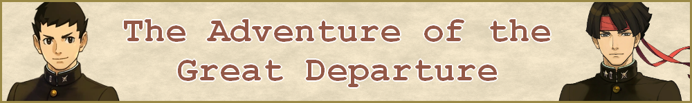
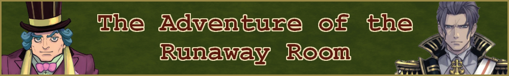
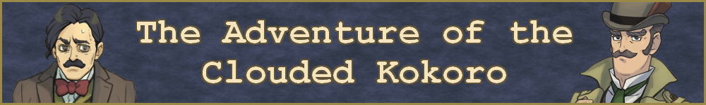
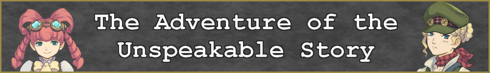
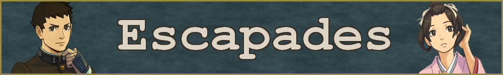

|  | |
|  |  |
|  |  |
大逆転裁判 -成歩堂龍ノ介の冒險- (Dai Gyakuten Saiban: Naruhodō Ryūnosuke no Bōken) was first released in Japan on July 9, 2015 for the Nintendo 3DS. It was localized into English and released worldwide as "The Great Ace Attorney: Adventures," along with its sequel, as part of "The Great Ace Attorney Chronicles" on July 27, 2021 on PC and various consoles.
A spinoff of the main series, it stars Phoenix Wright's ancestor, Japanese budding defence attorney Ryunosuke Naruhodo, as he solves murder cases in Meiji-era Japan and Victorian-era London at the turn of the 20th century. With his trusted judicial assistant, Susato Mikotoba, and the help of British detective Sherlock Ho- sorry, Herlock Sholmes, Ryunosuke must uncover various mysteries by defending his clients in court against ruthless prosecutor Barok van Zieks.
Before "The Great Ace Attorney Chronicles" was released, a group known as "Scarlet Study" released an English fan translation of the first game. If you've seen English-language Youtubers play the game before 2021, it was most likely this version. Additionally, a YouTube channel known as "Dai Gyakuten Saiban 2" had released a walkthrough of the game in Japanese with English subtitles. Their playlist can be found here.
After its initial release, the game received bonus content in the form of "escapades," short, slice-of-life kinetic novels approximately fifteen minutes each in length, some of which are told from the point of view of characters other than Ryunosuke. Eight of these escapades were released along with "The Great Ace Attorney Chronicles."